Das Energiesystem der Zukunft - und was man als Privatperson tun kann
1 Vorstellung
- Julius Aka, 28 Jahre alt
- Doktorand am Lehrstuhl für Mechatronk der Universität Augsburg
- Thema: Energiesystemsimulation und Scientific Machine Learning (“KI”)
- Master in Energietechnik (Maschinenbau), TU Hamburg
- Auslandsjahr an UC Berkeley, Kalifornien
- Bachelor in Allgemeine Ingenieurwissenschaften, TU Hamburg
- Vertiefung Energie- und Umwelttechnik
- Tätigkeiten bei XRG-Simulation, Siemens Gamesa, Institut für technische Thermodynamik
- Deutschlandstipendien 2017-2022, VDI-Preis Hamburg, (BA & MA), bidt graduate center Stipendiant
2 Einführung
2.1 Die Klimakatastrophe
- wesentliche Treibhausgase:
- \(\text{CO}_2\)
- Methan, ca. 80x klimaschädlicher als \(\text{CO}_2\) über 20 Jahre
- weitere: Lachgas, F-Gase, …
- Emissionsbudget
- Wesentlich mehr fossiler Brennstoffe, als die Erde verkraften kann
2.2 Emissionen weltweit
- Peak ist noch nicht erreicht [1]
- China: Erfolg der EE im Stromsektor [2]
2.3 aktueller Stand der Zielerreichung
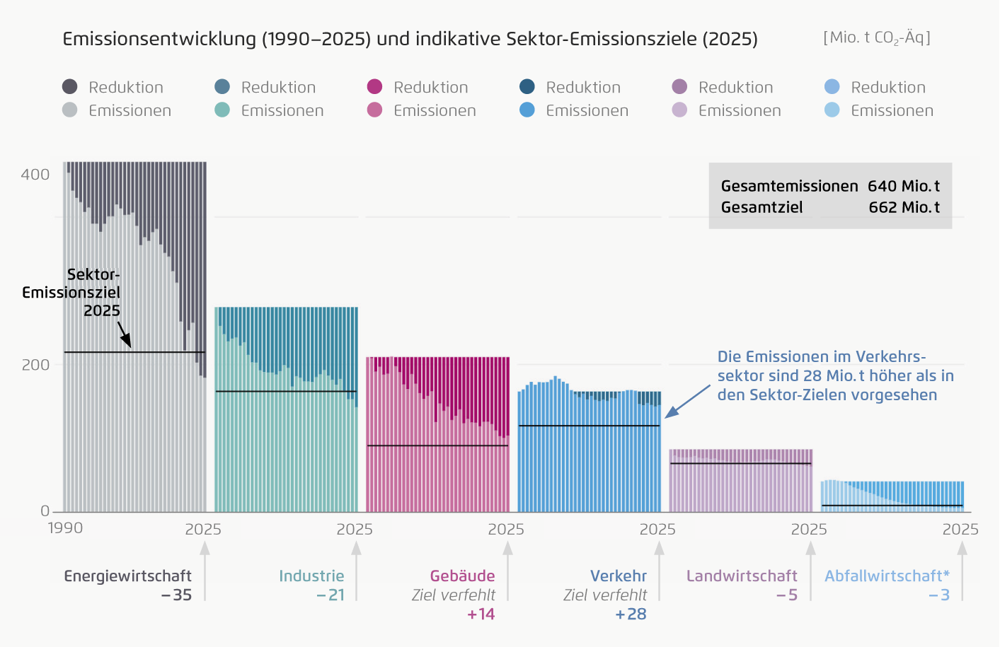
- Energiewirtschaft (Stromerzeugung) auf Kurs
- Industrie: Effizienzgewinne und Verlagerung ins Ausland (Bezugsjahr 1990)
- Verkehr & Gebäude: großer Nachholbedarf
- Climate Action Tracker:
- Deutschland “Insufficient”, derzeitige Maßnahmen reichen fast für <+2°C aus [4]
- Weltweite Maßnahmen: +2.6°C, aktuelle Ziele: +2.2°C [5]
3 Energiequellen der Zukunft
3.1 “Primärenergie” der Zukunft
- Photovoltaik und Wind \(\rightarrow\) Strom: “All Electric Society”
- eher nicht:
Wasserstoff(“Champagner der Energiewende”)- aber Wasserstoff als saisonaler Energiespeicher und Grundstoff für Chemie und Schwerindustrie
- ganz sicher nicht:
Kernenergie(Energiewende jetzt nötig, nicht in 20 Jahren, Bauzeiten)Kernfusion(aus selbem Grund)
3.2 Boom von Wind & Solar weltweit
- Boom von Solar und Wind weltweit
- Wasserkraftspotenziale in Deutschland ausgeschöpft
- Vorteile:
- Regelbarkeit
- in begrenzten Umfang Speicherfähigkeit
- Vorteile:
3.3 Solar & Wind sind am günstigsten
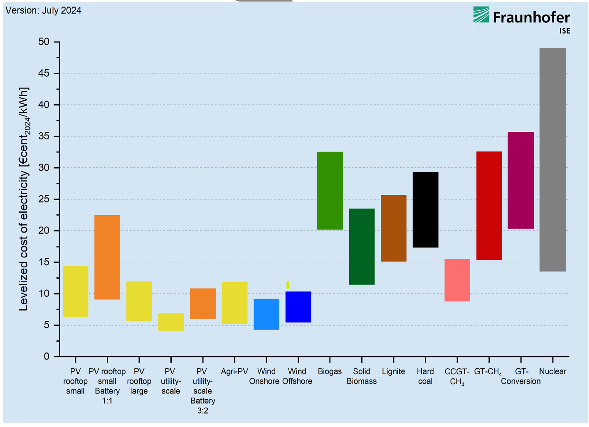
- Solar und Wind sind in Deutschland am günstigsten
- Biogas nach Nuklearenergie teuerste Form der Stromerzeugung
- Folgen für Biodiversität & Konkurrenz mit weltweiter Nahrungsmittelproduktion
- meine Meinung:
- besser PV (32x mehr Strom) bzw. Wind (850x mehr) [8]
- ggf. in Kombination mit Wasserstoffproduktion
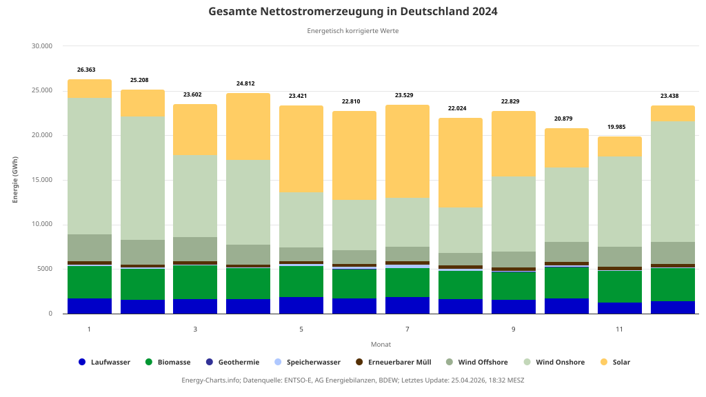
erneuerbare Stromerzeugung in Deutschland 2024 [9]
- Wind & Solarenergie ergänzen sich im Jahresverlauf
- jedoch: Wind deutlich volatiler, Feb. 2025 z.B. 9GWh anstatt 16GWh 2024
3.4 Wind
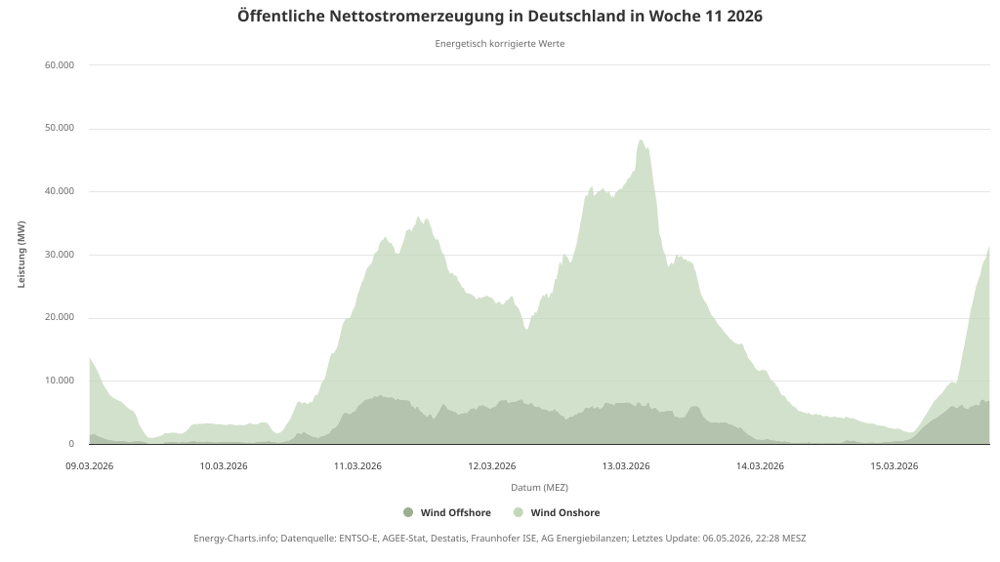
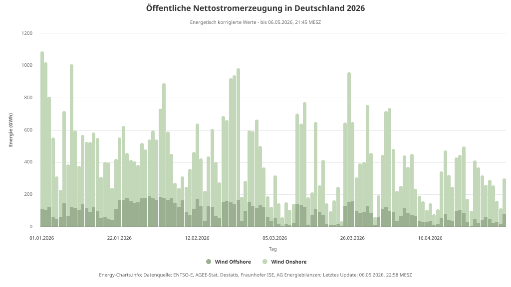
- \(\rightarrow\) Starkwindphasen über mehrere Tage senken den Börsen-Strompreis deutlich
- \(\rightarrow\) Flauten erhöhen den Strompreis deutlich (v.a. im Winter)
3.5 Sonne
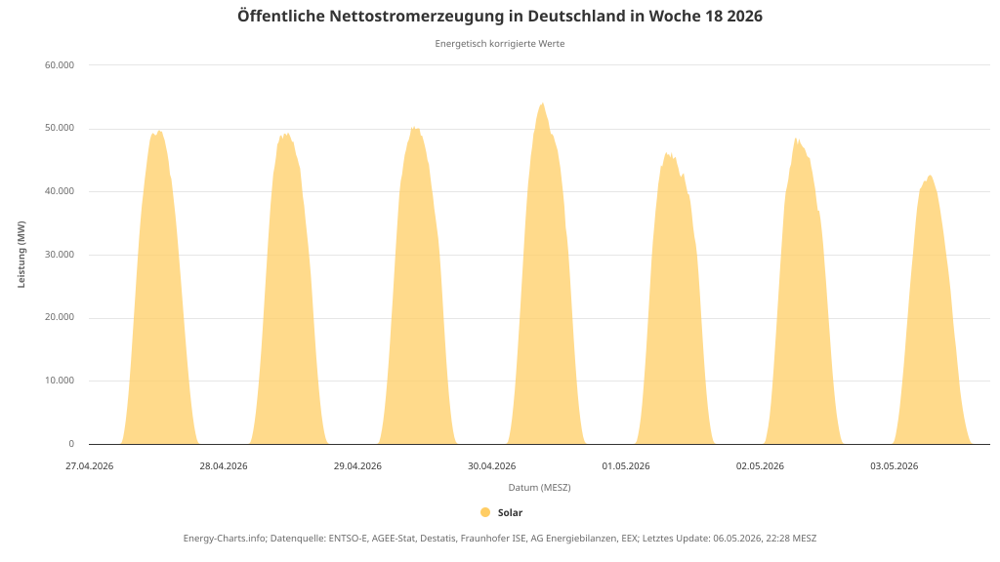
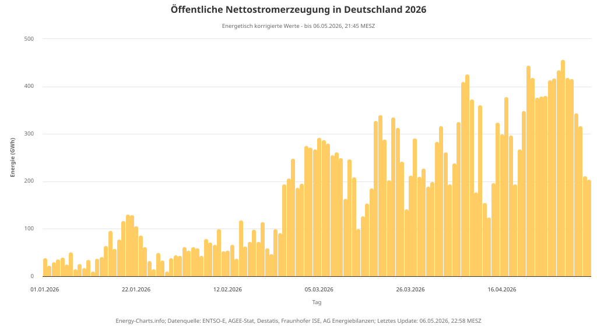
- \(\rightarrow\) täglicher Peak der PV Erzeugung
- \(\rightarrow\) im Sommer regelmäßig mittags geringste Börsen-Strompreise
3.6 Bioenergie
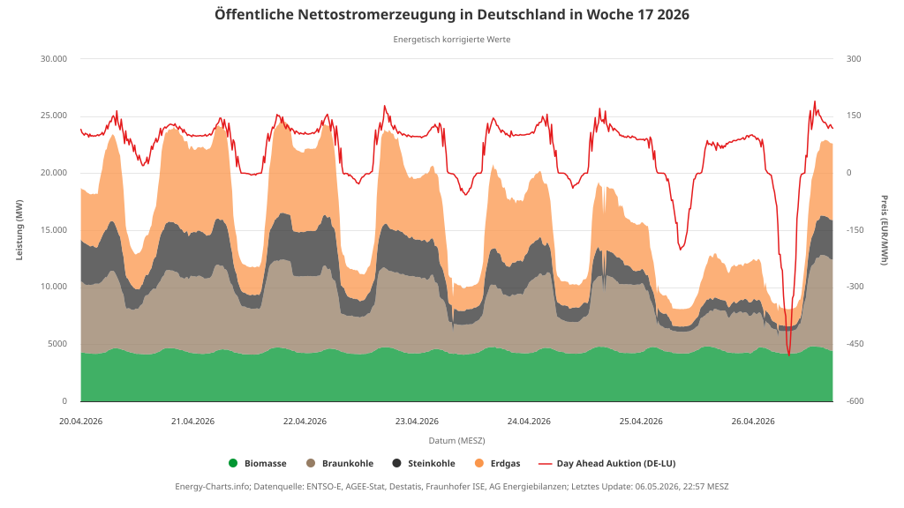
Biogaserzeugung & fossile Kraftwerke vs. Börsenstrompreis: fixe EEG-Vergütung verhindert Flexibilisierung [9]
- ungenutztes Potenzial: keine Flexibilisierung durch fehlende Anreize bei Bestandsanlagen (EEG-Vergütung zeitlich konstant)
- hohe Umrüstungskosten (zusätzliche BHKW und Gasspeicher)
4 Wärmepumpen und Elektromobilität
“Das beste was der Effizienz je passiert ist”
Puzzlestück 1: Energieverbrauch verringern
4.1 Elektromobilität
- fossile Mobilität: 20-40% Wirkungsgrad
- elektrische Mobilität: 80-90% Wirkungsgrad
- \(\rightarrow\) Faktor 3 effizienter
- Emissionsabnahme über Lebenszyklus durch fortschreitende Dekarbonisierung der Stromerzeugung
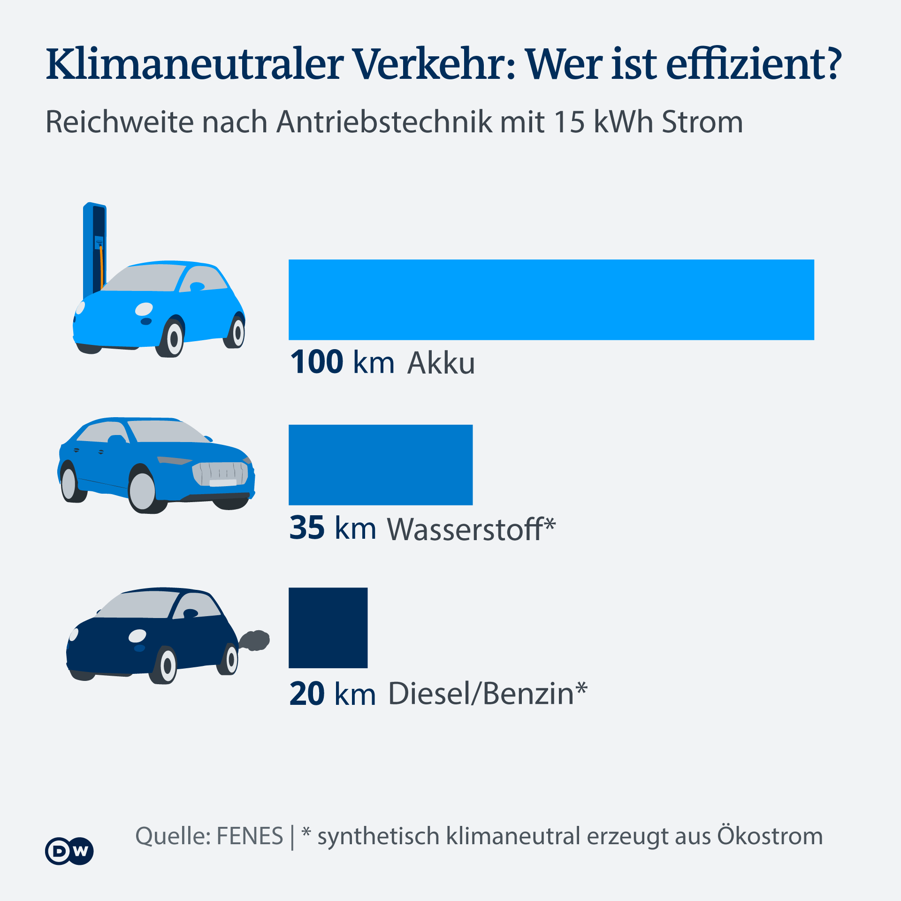
4.2 Wärmepumpen
- fossile Heizung: 80-90% Wirkungsgrad
- Wärmepumpe: 300-700% Wirkungsgrad (COP 3-7)
- Wirkungsgraddefinition \(\text{COP} = \frac{\text{Nutzen}}{\text{Aufwand}}\), Umweltwärme kostenlos, nur Strom als Aufwand
- \(\rightarrow\) Faktor 4-8 effizienter als Heizung
- Emissionsabnahme über Lebenszyklus durch fortschreitende Dekarbonisierung der Stromerzeugung
- mit E-Fuels heizen ist “politische Nebelkerze”
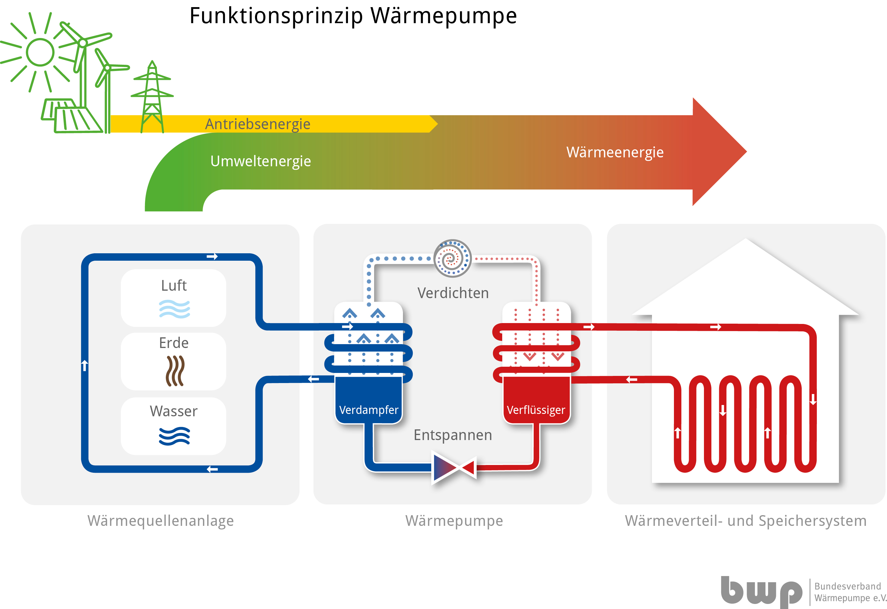
4.3 Bedeutung für die Energiewende 1
- Energieerhaltung
- \(\sum E_{in} = \sum E_{out}\)
- Energieflussdiagramm:
- Primärenergie: Energie vor erster Umwandlung
- Nutzenergie: Energie, die Aufgaben erfüllt (z.B. Heizen, Fahren)

{kind=link}
- 46% Verlust von Primär- zu Nutzenergie in Deutschland:
- Verkehr, Kraftwerke, (Gebäudeheizung)
- “Erneuerbare Energien erreichen 19% am Primärenergiebedarf” [12]
4.4 Bedeutung für die Energiewende 2
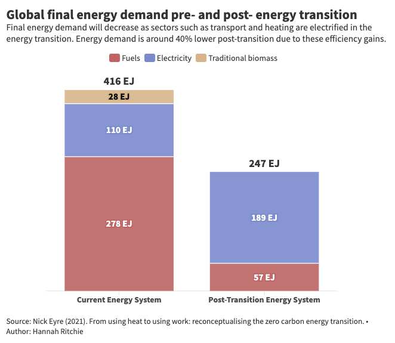
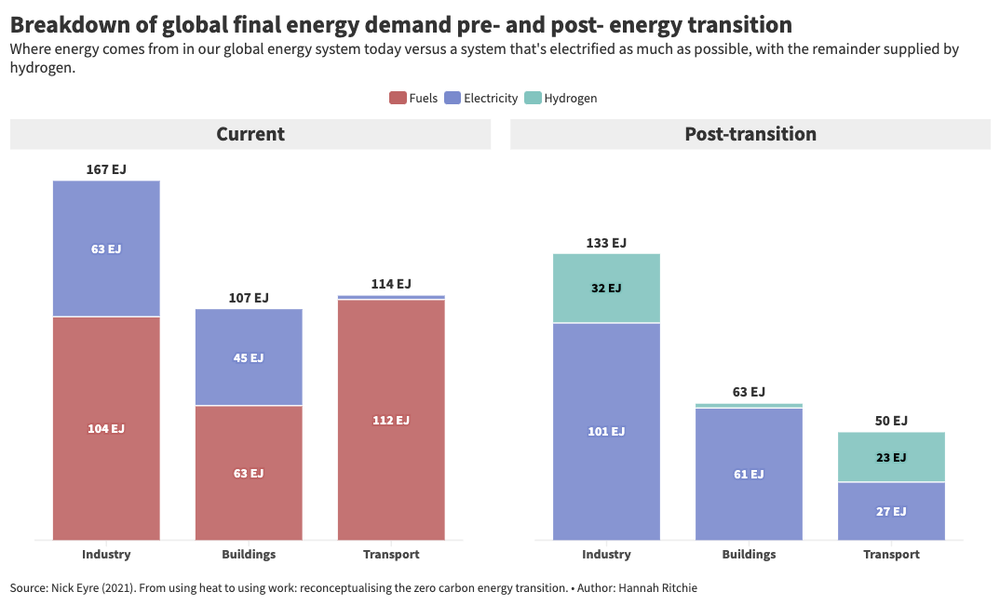
- Wärmepumpen und Elektromobilität \(\rightarrow\) Halbierung des Endenergiebedarfs in Gebäuden und Mobilität, -40% Endenergiebedarf weltweit
- Endenergiebedarf: Energie die von Verbraucher bezogen werden muss
- “primary energy fallacy” [14]: Das Problem wird kleiner, je mehr wir uns ihm nähern
5 Sektorenkopplung und Speicher
Puzzlestück 2: Das was geht, an Erzeugung anpassen
Puzzlestück 3: Energie kurz- und langfristig speichern
5.1 Speicher (kurzfristig): Batterien
Wirkungsgrad: 95%
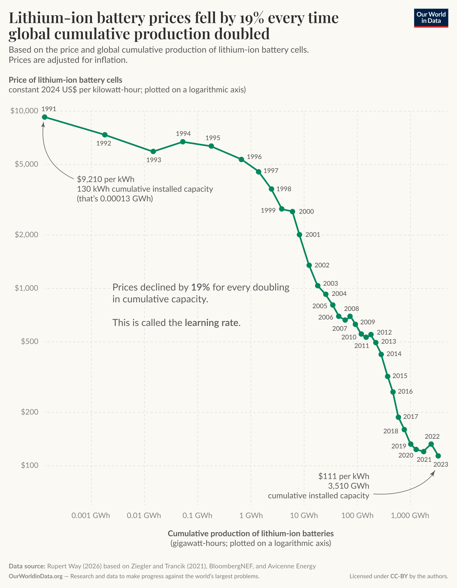
5.2 Was ist Power-to-X / Sektorenkopplung?
- Verknüpfung von verschiedenen Energieträgern
- Strom, Wärme und Rohstoffindustrie nicht mehr getrennte Systeme, sondern gekoppelt
- Dreh- und Angelpunkt: Stromnetz
5.3 Power-to-Mobility
- Zeitpunkt der Ladung von E-Autos, E-LKWs, E-Busse verschieben
- meist geringe Komforteinbußen
- “
Marginalerzeugungsansatz” (in einigen Studien) - großes Potenzial für bidirektionales Laden:
- im Jahr 2030 könnte Deutschlands Strombedarf 18h lang komplett durch E-Auto Batterien gedeckt werden1
5.4 Power-to-Heat
- Wärmepumpen privat
- Großwärmepumpen (Fernwärme)
- Power-to-heat mittels Elektrodenheizung (Fernwärme)
- geringer Wirkungsgrad, aber auch geringe Investition \(\rightarrow\) negative Strompreise, Engpassmanagement
- Hochtemperaturspeicher zum Puffern
5.5 Speicher (langfristige): Power-to-Gas
- Wasserstoff-Herstellung
- Energie-Speicher und Industrie-Rohstoff (chemische & Schwerindustrie)
- Effizienz: ca. 65% Wirkungsgrad
- Rückwandlung mit Brennstoffzelle: ca. 60%
- \(\rightarrow\) >40% Gesamtwirkungsgrad
- Hauptkosten: Strom
- Handhabung teuer: Flüchtigkeit, hoher Druck, Explosionsgefah
- weitere Gase, ggf. Herstellung Derivate
- Umwandlung zu Methan
- Ammoniak (\(\text{NH}_3\)) (Schiffahrt)
- Power-to-Liquid (eFuels) \(\rightarrow\) Kerosin
- Fischer-Tropsch-Verfahren
- grob: \(\text{Wasserstoff} + \text{CO}_2 \rightarrow \text{Kraftstoffe} (\text{C}_{x}H_{y})\)
- weitere Wirkungsgradverluste
- Fischer-Tropsch-Verfahren
- Deutschland besitzt große Menge Gaskavernenspeicher (noch Erdgas):
- 250TWh, zum Vergleich: 600TWh Strombedarf in Deutschland
5.6 Fazit
Kopplung von fluktuierender erneuerbare Erzeugung mit flexiblen Verbrauchern und Speichern
\(\rightarrow\) marktwirtschaftlicher Signale nötig, die Knappheit und Überfluss widerspiegeln
6 Strommarkt
zentraler Drehpunkt des zukünftigen Energiesystems: Elektrizität als “Primärenergie” der Zukunft
6.1 Aufbau der Stromnetze
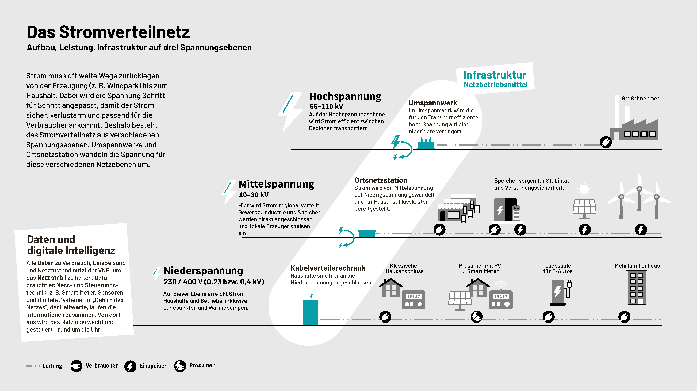
Aufbau des Stromnetzes [17]
6.2 Europäisches Verbundnetz
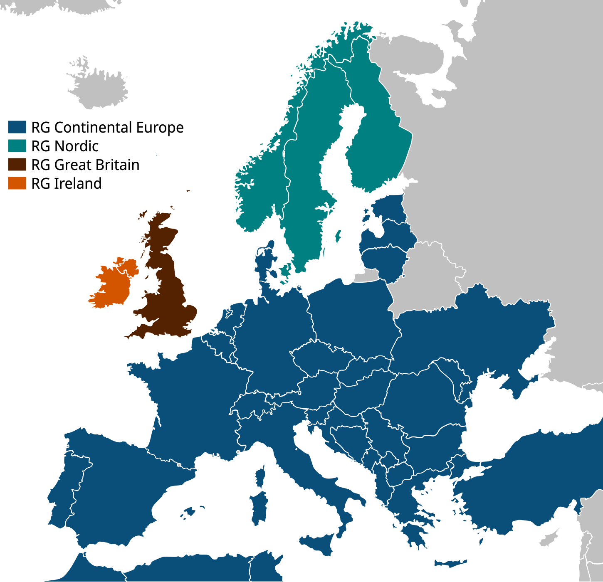
Europäisches Verbundnetz [18]
- größte Maschine der Welt
- Vorteile:
- geringere Preise
- größere Systemstabilität
- Übertragungsnetzbetreiber (ÜNB) [19], betreiben Hochspannung:
- Tennet
- Amprion
- TransnetBW
- 50 Hertz
- “Wächter der Netzstabilität”
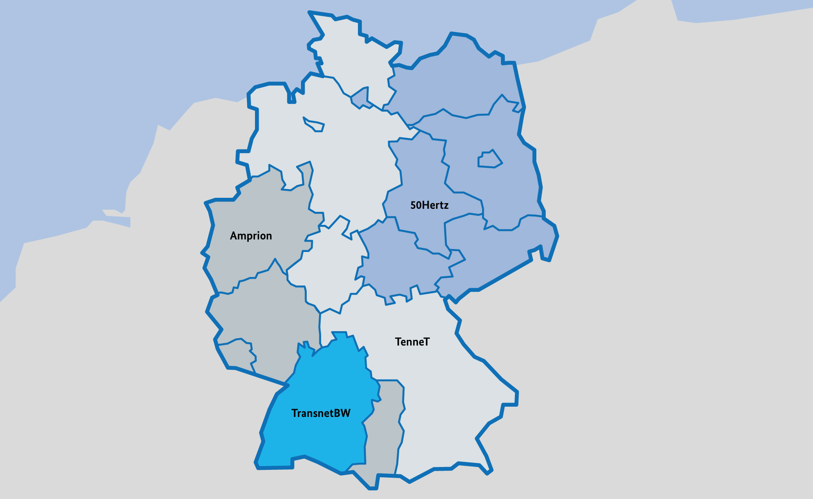
6.3 Verteilnetzbetreiber (VNB)
- Verteilnetzbetreiber: 851 Unternehmen [20]
- Kritik: kleinteilige Struktur kann ineffizient sein
- Gegenargument: lokale Nähe und kommunale Verankerung
- mögliche Antwort: Kooperationen und gemeinsame Plattformen
- Paragraf §14a EnWG - Auswirkungen auf Verbraucher
- Schutz des Verteilnetzes vor Überlastung
- Möglichkeit zum “Dimmen” in begrenzten Zeiträumen
- Im Gegenzug Reduktion der Netzentgelte
- Pflicht zum Netzausbau in betroffenen Gebiete
6.4 Charakteristika des Strommarktes
- Markt ohne Möglichkeit zur Lagerhaltung
- Bedingung: Erzeugung = Verbrauch
- Abweichung: Veränderung der Netzfrequenz von 50Hz
- Verbrauch ist netzgebunden - Monopol des Stromnetzbetreibers
- keine eindeutige Zuordnung von Verbraucher zu Erzeuger
- Strom ist (zumeist) Kuppelprodukt:
- elektrische Energie + jederzeitige Verfügbarkeit der Energie
6.5 typischer Lastgang Deutschland
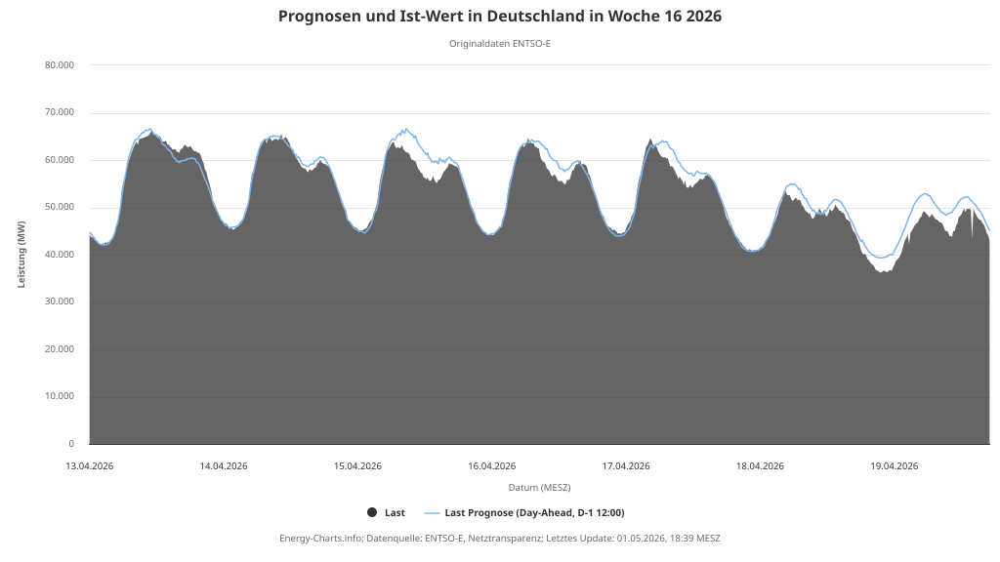
Lastgang der KW 16 2026 von energy-charts.info (Fraunhofer) [9]
- Last in der Nacht niedrig
- steigt bis zum Mittag an
- Abflachen zum Nachmittag
- Anstieg zum Abend
- niedriger am Wochenende
- zw. 40-70 GW
6.6 Strompreis- und Erneuerbare Energien
Börsenstrompreis (Day-Ahead) als Indikator für Knappheit oder Überfluss von Strom
6.6.1 Winter
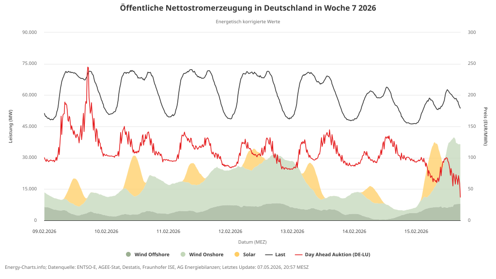
energy-charts: Day-Ahead Börsenstrompreise über eine Woche im Winter [9]
- ca. 160€/MWh Steuern, Netzentgelte und Umlagen
- Preispeaks abends und morgens
- am Wochenende günstigere Preise
- nachts günstigster Strom verfügbar
- Flaute & Sturm bestimmen Preisniveau des Tages
6.6.2 Sommer
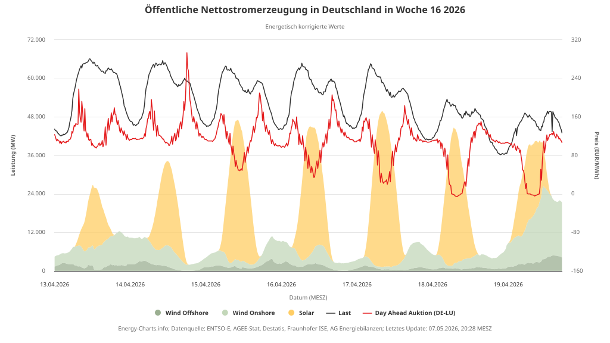
energy-charts: Day-Ahead Börsenstrompreise über eine Woche im Sommer [9]
- plus ca. 160€/MWh Steuern, Netzentgelte und Umlagen
- Solarstromspitzen sorgen verlässlich für Minimum zur Mittagszeit
- ausgeprägterer Peak abends, da rasches Absinken der PV-Erzeugung
- PV-Überschüsse führen regelmäßig an Wochenende zu Null- oder Negativpreisen
- Feiertage / lange Wochenenden stellen zunehmend Problem dar
- Gründe: starre EEG-Vergütung, geringe Flexibilisierung, fehlende Speicher
6.7 Strommarkt nach Liberalisierung
- Entflechtung von Erzeugung und Verteilung
- Strom handelbar über:
- Termingeschäfte, Power-Purchase Agreements (PPA) (langfristig, z.B. Jahre im Vorraus) [21]
- Day-Ahead-Markt(in 15min Stücken, Gebotabgabe bis 12 Uhr am Vortag)
- Intraday-Markt (in 15min Stücken, bis 30/5min vor Lieferung)
- basierend auf Last- und Erzeugungsprognose (Wettervorhersage)
6.8 Ablauf des Day-Ahead Markt
- Angebot nach variablen Grenzkosten
- letztes eingesetztes Kraftwerk bestimmt Preis
- Erneuerbare mit Grenzkosten 0€ drücken den Preis
- Aber: EEG garantiert bestimmte Vergütung und tw. (private PV) Einspeisung \(\rightarrow\) negative Preise
- Solarspitzengesetz für privat-PV: keine Vergütung bei negativen Preisen, Begrenzung auf 70% der Maximalleistung \(\rightarrow\) Speicher netzdienlich laden
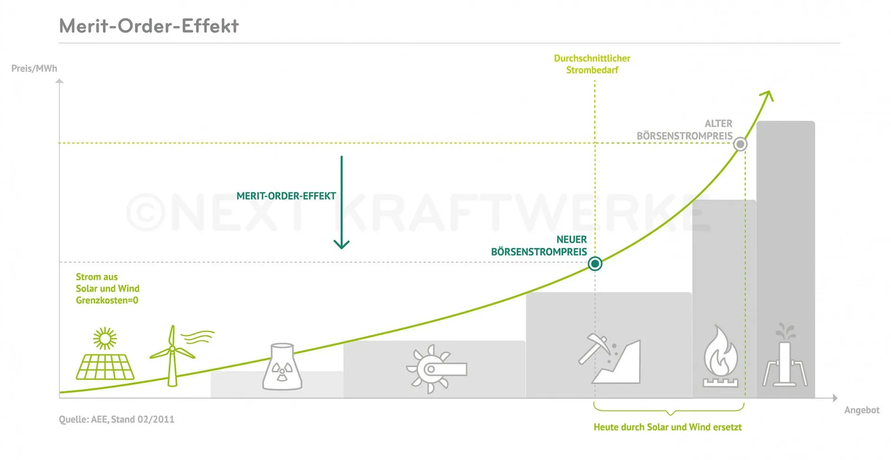
6.9 Redispatch
- Stromhandel: Deutschland = eine Preiszone
- Vernachlässigung der Übertragungskapazitäten (“Kupferplatte”)
- Ausgleich identifizierter Engpässe durch ÜNB
- Kosten werden auf Netzentgelte umgelegt (steigend, 2024: ca 1.8 Mrd. €)1 [25]
- Gegenmaßnahmen:
- Netzausbau Nord-Süd
- Teilung von des deutschen Strommarktes in mehrere Preiszonen, die Übertragungskapazitäten berücksichtigen
- Druck aus EU
- Tendenziell geringer Strompreise im Norden, höhere im Süden
- Befürchtung: Verlagerung von energieintensiver Industrie in den Norden
- Preisunterschiede aber wahrscheinlich gering
7 Energiesystem der Zukunft
- dezentralisierte Erzeugung
- digitalisierte und marktwirtschaftliche Kopplung von Erzeugung und Verbrauch
- Flexibilisierung von Verbrauch, insbesondere durch Sektorenkopplung
- Kurzzeitspeicher: Batterien, Wärmespeicher
- Langzeitspeicher: Wasserstoff (“Kalt-Dunkel-Flaute”)
8 Energiewende Zuhause
8.1 Smart-Meter
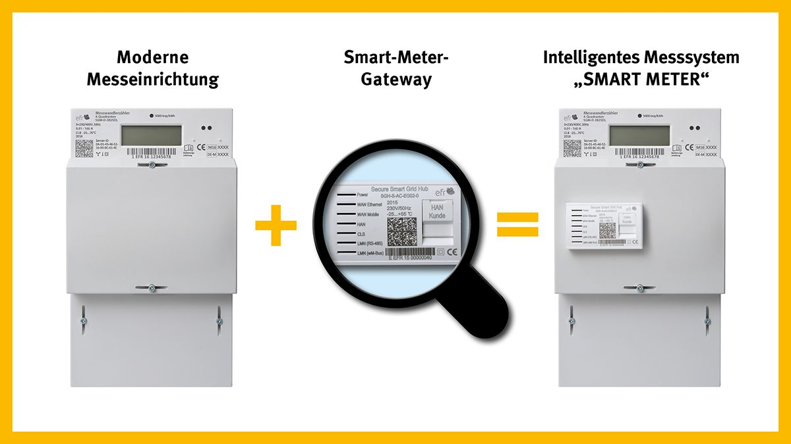
- Gründe:
- politisch bewusst verschleppter Rollout, Vorwand Datenschutzbedenken
- Ineffizienzen bei kleinen VNB
8.2 CO2 Emmissionen / Strompreis überprüfen
und Verbrauch großer Geräte (Geschirrspüler, Waschmaschine, Trockner, E-Auto, Wärmepumpe) anpassen
- smard.de (Strommarkttransparenzstelle)
- energy-charts.info (Fraunhofer ISE), Stromampel-App
- Electricity Maps (App zu weltweiter Emissionsintensität)
8.3 dynamische Stromtarife
von wechselnden Strompreisen profitieren
- macht vor allem Sinn, wenn große verschiebbare Lasten vorhanden (E-Auto, Wärmepumpe, Batteriespeicher)
- Verpflichtung, dynamische Stromtarife (Day-Ahead-Preis) anzubieten
- andere Tarifmodelle denkbar:
- Tarife mit mehreren Preiszonen pro Tag
- Tarife mit aktiver Ansteuerung des Ladevorganges bei E-Auto
- noch wenig Anbieter (bisher Octopus Energy)
8.4 PV & Speicher
- Kosten: ca. 15.000€ für 10kWp PV-Anlage, 10kWh Speicher & Elektroinstallation
- pro kWp: ca. 1000 kWh Strom pro Jahr
- Speicher nicht zu groß wählen, wichtig für Eigenverbrauch. Einfache Web-Tools hier, einfache Faustformeln hier
- Reduktion des Strombezuges um 80%, geringe Vergütung von 0.07/€ kWh für eingespeisten Strom
- sehr attraktiv in Kombination mit E-Auto oder Wärmepumpe: PV-Überschussladen
8.4.1 Netzdienlichkeit von privaten PV Anlagen
- aufgrund fester EEG Vergütung fixe Einspeisung
- -499.99€/MWh Börsenstrompreis am 1.Mai 2026
- \(\rightarrow\) hier wird sich etwas ändern müssen
- heutige mögliche Lösungen
- mindestens: prognosebasierte Ladung
- oder Integration in ein virtuelles Kraftwerk, z.B. bei Anbietern wie 1KOMMA5, attraktive Vergütung \(\rightarrow\) zukünftig sinnvollstes Modell
- Wichtig: Orchestrierung & Kommunikation der Komponenten, des (dynamischen) Stromtarifes und Prognosen, viele einfache Anbieter bieten hier wenig.
- zum Selbermachen: z.B. clever-pv, EVCC… (IT-Affinität nötig)
- Zukünftig:
- Bereitstellung von Systemdienstleistungen (Regelenergie, lokale Spannungshaltung)
- Diskussion: indirekten Subventionierung durch Einsparung von Netzentgelten bei nur tw. reduzierter Infrastrukturnutzung (Sozialaspekt)
8.5 Alternative: Balkonkraftwerke
- steckerfertige Solaranlagen zur Selbstmontage, 4kWp PV, 4kWh Speicher für 2000€
- Speicher können auch mit dynamischen Stromtarifen arbeiten (Winter)
- max. 800W Einspeisung, begrenzter Nutzen für E-Autos und Wärmepumpen
- Interessante Anbieter:
- Solakon (deutsche Server)
- Ecoflow (flexibel platzierbar Speichermodule mit 1200W Steckdose)
8.6 Wärmepumpe
- Wärmepumpen funktionieren in fast allen Bestandsgebäuden1
- bei anstehendem Austausch über Laufzeit günstiger als Gasheizung
- Beispiel: 20.000kWh Wärmebedarf, konservative Annahmen23:
- über 15 Jahre:
- Gasheizung: 46.300€4
- Wärmepumpe: 37.500€5
- perspektiv Strom gleich teuer oder günstiger (dynamische Tarif, Solaranlage)
- perspektivisch Gas teurer (CO2-Preis, steigende Netzentgelte, “Biotreppe”)
- über 15 Jahre:
- Beispiel: 20.000kWh Wärmebedarf, konservative Annahmen23:
- bei vorzeitigem Austausch oft auch günstiger, v.a. bei älteren Heizungen (Wirkungsgrad) oder dynamische Tarife / PV
- mein Tipp: erfahrener Betrieb & besonders effiziente Geräte (z.B. Lambda, Heliotherm)1
8.6.1 Alternative: Klima-Splitgeräte
- gleich Funktionsweise und Wirkungsgrad wie Wärmepumpe
- Nachteil: Luftzug, ungleichmäßige Wärmeverteilung
- günstige Lösung, Einzelgeräte ab 1000€ bzw. 3500€ mit Einbau
- mögliche Low-Budget-Lösung und Zusatznutzen im Sommer (Schutz vor Hitzewellen)
8.7 E-Auto
- direkte Emissionen (aktuell): 150-200g \(\text{CO}_2\)/km Verbrenner vs. 60g \(\text{CO}_2\)/km 1 60g \(\text{CO}_2\) / km E-Auto
- “Emissionsrucksack” von 20-70kg \(\text{CO}_2\)/kWH Batterie (je nach Herstellungsregion, Zahlen für 2030 [29])
- Lebenszyklus-Emissionen deutlich geringer als von Verbrennern, ADAC-Tool2
- 50.1t (Diesel) vs. 27.6t (E-Auto) vs. 14.9t (E-Auto nur Windstrom) [30]
- weiteres Absinken (effizientere Produktion, fortschreitende Emissionsreduktion des Fahrstroms)
- Klimanutzen bei Ersatz von Bestandsfahrzeugen ab ca. 7500km/Jahr [31]
8.7.1 E-Auto: Batterien
- Lebensdauer unproblematisch
- Wichtig: dauerhafte Ladestände > 80% und < 20% vermeiden
- Rohstoff-Thematik entschärft sich in Zukunft:
- neue Technologien (Lithium-Eisen-Phosphat (LFP), Natrium-Ionen-Batterien)
- Recycling
- meines Erachtens: geringere Umwelt- und soziale Auswirkungen als fossile Brennstoffe
- weniger Wartungskosten, geringere Betriebskosten
9 Quellen
10 Backup-Folien
10.1 Exkurs: Wandelbarkeit von Energie
- Wirkungsgrad: \(\eta=\frac{Nutzen}{Aufwand}\)
- Thermodynamik, N.Carnot (1824): Wärme ist nicht uneingeschränkt in Arbeit wandelbar
- Arbeit dahingegen vollständig in Wärme wandelbar
- Beispiele
- Wasserkocher: Strom (Arbeit) \(\rightarrow\) Wärme: 100% Wirkungsgrad
- Auto mit Verbrennungsmotor: chemische Energie in Form von Wärme \(\rightarrow\) Antrieb: ~30-40% Wirkungsgrad
- je höher die Temperatur der Wärme, desto wertvoller (mehr Arbeit erzeugbar, Carnot-Faktor)
10.2 Klassiker: Kombi-Kraftwerke
- Grundlagen:
- Wärme nie uneingeschränkt in Arbeit wandelbar
- Arbeit dahingegen immer vollständig in Wärme wandelbar
- Wärme stellt (je nach Temperatur) niedrigst-wertvollste Energieform dar
- Kraftwerke mit Wärmeauskopplung (Fernwärme)
- neue Motoren und Turbinen prinzipiell mit Wasserstoff möglich
- 20 Vol-% Wasserstoff sind nur x% CO2-Reduktion, da \(\text{H}_2\) nur x/x der Energiedichte von Erdgas hat
- \(\rightarrow\) nur 100% Wasserstoff ist klimaneutral!
10.3 Leistung und Energie
Leistung und Energie ist etwas unterschiedliches!
Energie: Arbeit, die verrichtet wurde [in W oder kW]
Leistung: Geschwindigkeit der Arbeitsverrichtung [in Wh, kWh, MWh]
am gebräuchlichsten: kWh - kilowatthour (Kilowattstunde)
Zusammenhang: \(E = \int P(t) dt\)
Rechenbeispiele
- 1h E-Auto laden mit 11kW
- \(11 \text{kW} \cdot 1\text{h} = 11 \text{kWh}\)
- 5min Wasserkocher mit 2000W
- \(2000 \text{W} \cdot 5/60\text{h} = 166 \text{Wh} = 0.166 \text{kWh}\)
- 1h E-Auto laden mit 11kW
Strompreis privat: ca. 0.3€/kWh
- ÜNB als Wächter der Netzstabilität
- Bilanzkreis: virtuelles Energiemengenkonto eines Energiehändlers [35]
- Einspeisung
- Entnahme
- Bilanzkreisverantwortliche reichen Fahrplan einen Tag vorher ein
- ÜNB überprüfen Fahrplan
- Basierend auf Fahrplänen: Lastflussrechnungen identifizieren Engpässe
- Unstimmigkeiten: werden von ÜNB durch (teuere) Ausgleichsenergie behoben
- Bilanzkreis: virtuelles Energiemengenkonto eines Energiehändlers [35]

{kind=link}
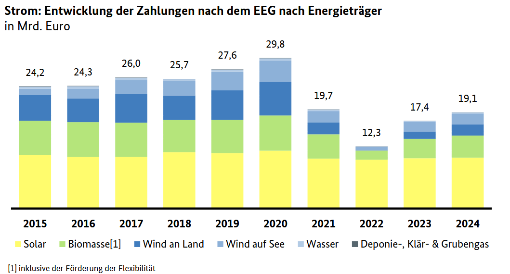
EEG-Zahlungen [25]
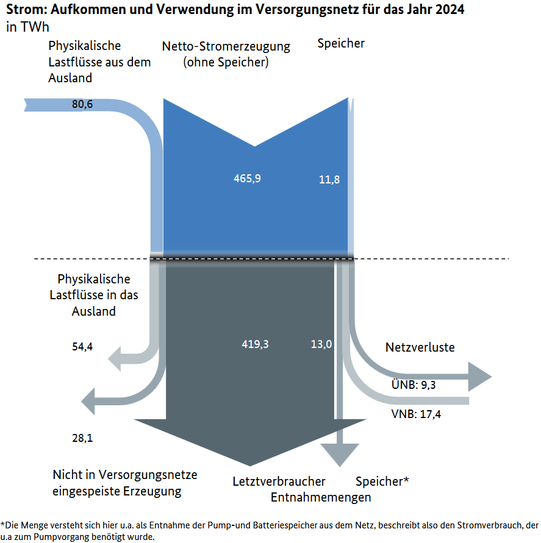
Strom Aufkommen 2024 [25]
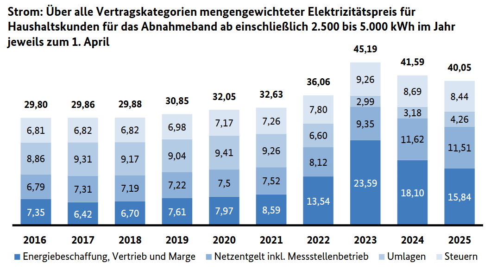
Zusammensetzung privater Strompreise [25]
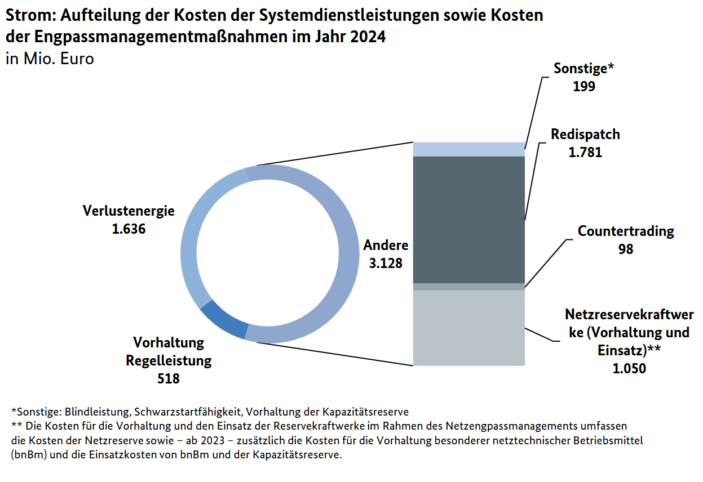
Kosten der Systemdienstleistungen [25]
Das “Atomenergie-Paradox”
Energieeffizienz bewirkt größere Fortschritte als man denkt
Das Energiesystem der Zukunft